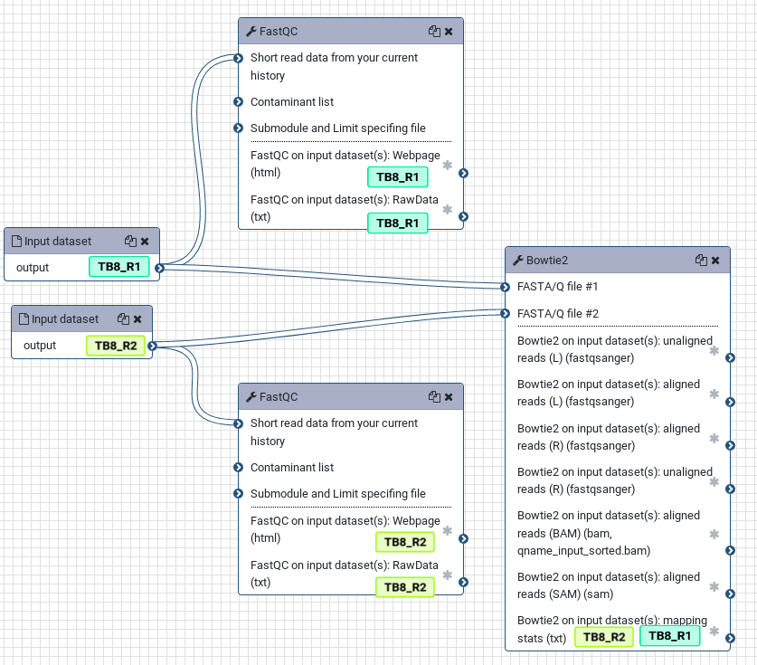
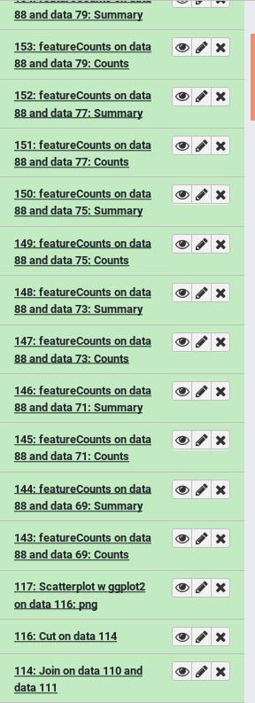
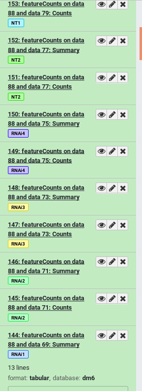
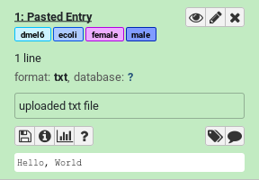
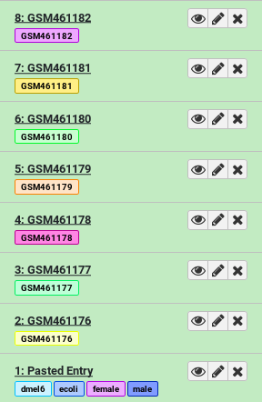
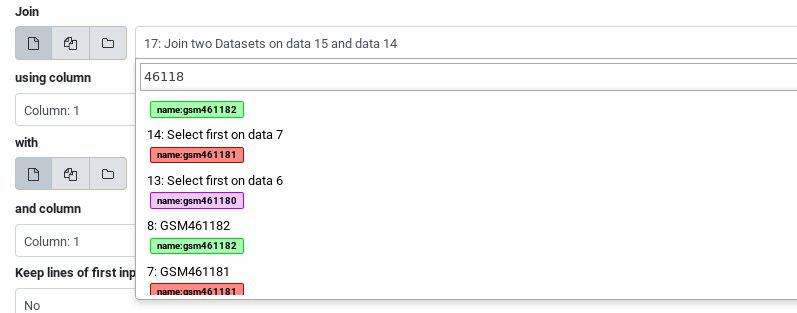
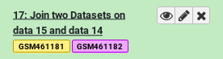

Name tags for following complex histories
 Helena Rasche
Helena Rasche
Overview
question Questionsobjectives Objectives
- What are name tags or hash tags?
- How can I use them to keep track of my data?
- Learn how to set name tags
- Learn how they are propagated
time Time estimation: 20 minutes
Supporting Materials
Introduction
Long ad hoc data analysis sessions in Galaxy can leave you with a multitude of datasets named things like “1724: Summarize taxa on data 1628 and data 1629” or “1853: Pick OTUs Combined: OTUs”. While these names are useful in smaller analysis sessions with fewer datasets, as the size of your history grows, so does the amount of time it takes to figure out where your datasets came from.
You have two options to deal with this:
- Re-name datasets constantly with more useful titles
- Use name tags once, on the inputs to your analysis
Name tags “propagate”, they will follow your datasets throughout their analysis.
To more clearly see this, look at the simple workflow below. If the input datasets are tagged TB8_R1 and TB8_R2, these tags will propagate to the outputs of any tools run on these datasets. If a tool has multiple inputs with tags, the outputs will have all of the tags like in the bowtie2 tool.

It can turn your histories from a complicated mess into an easier to follow analysis, as each step is clearly labelled with the original input sample corresponding to each analysis:
| Bad | Good |
|---|---|
|  |  |
| How would you identify which input sample corresponds with which featureCounts output? | With name tags applied before the start of analysis, each output is also tagged with the appropriate sample name |
Agenda
In this tutorial, we will cover:
Setting name tags manually
hands_on Hands-on: Set name tags manually
Create a new history
tip Tip: Creating a new history
Click the new-history icon at the top of the history panel
If the new-history is missing:
- Click on the galaxy-gear icon (History options) on the top of the history panel
- Select the option Create New from the menu
Using the Upload galaxy-upload tool select Paste/Fetch data and paste some data like “Hello, World”
When this is uploaded, click on the title of the dataset in your history panel to expand it
Add some name tags (hashtags) to your dataset:
#female#male#dmel6#ecolitip Tip: Adding a tag
- Click on the dataset
- Click on galaxy-tags Edit dataset tags
Add a tag starting with
#Tags starting with
#will be automatically propagated to the outputs of tools using this dataset.- Check that the tag is appearing below the dataset name
These are example tags, but it is recommended that you use name tags to reflect the identity of the input sample, in some way that’s important to you. If you’re doing an analysis comparing wildtype and treated samples, you might tag things based on the condition. If you’re processing NGS data you might want to tag based on the read set where each sample originated.
If you’re using a Galaxy server newer than 19.01, you will notice that the tags each have different colours:

details In depth: Colours
The colours are generated from a checksum of the text of each tag. Every time the same tag is used, the same colour will be generated. Different words will usually result in different colours.
This allows tags with very similar lengths and word shapes (e.g.
peaksandgenes) which can be mistake at small font size if you aren’t careful. While current evidence (Jacobs 2017) doesn’t support the “word shape” model of word recognition, it has still been seen to be beneficial to provide more contrast between words when mistakes can be costly (Degani 1999). In the context of Galaxy, mistakes are usually not incredibly costly, but can be annoying. This gives an easy additional signal on which you can mentally filter your datasets.You can read some of the discussion that went into implementing the tags in the pull request to Galaxy.
Setting name tags with the Rule Builder
In this section we will demonstrate how you can add name tags to datasets automatically using the rule-based uploader. This is especially useful when you have a large number of datasets you want to tag all at once.
For more information about the rule-based uploader, please see this dedicated tutorial
hands_on Hands-on: Set name tags during upload
- Open the Upload galaxy-upload interface
Click on Rule-based at the top
As you can see in this dialog, data can be selected from a history dataset or pasted in directly
- Set Upload data as: to
DatasetsPaste the following links into the text box
https://zenodo.org/record/1185122/files/GSM461176_untreat_single.counts https://zenodo.org/record/1185122/files/GSM461177_untreat_paired.counts https://zenodo.org/record/1185122/files/GSM461178_untreat_paired.counts https://zenodo.org/record/1185122/files/GSM461179_treat_single.counts https://zenodo.org/record/1185122/files/GSM461180_treat_paired.counts https://zenodo.org/record/1185122/files/GSM461181_treat_paired.counts https://zenodo.org/record/1185122/files/GSM461182_untreat_single.countsClick Build
- We will add a regex that creates 3 new columns with accession, treatment and library type:
- Click on the Columnn button and then Using a Regular Expression
Select Create columns matching expression groups
- Paste
.*(GSM.*)_(.*)_(.*).countsin “Regular Expression”- Set “Number of Groups” to 3
- Click on Apply
We should have now a table with 4 columns: link, sample name, treatment, sequencing type
- Click on Rules and then Add / Modify Column Definitions
- Click on Add Definition and select:
- “URL”: Column A
- “Name”: Column B
- “Name Tag”: Column B
- “General Purpose Tags(s)”: Columns C and D
- Click Apply
- Click Upload

This will add 7 new datasets to your history, each one tagged and named appropriately.

The datasets now have two types of tags: name tags and general purpose tags. General purpose tags, unlike name tags, will not propagate. They’re mainly useful for searching through your datasets (Try entering tag=paired in your History search box).
question Questions
- How many tags does the dataset named
GSM461176have? Which ones?- How many of those tags are propagating name tags?
solution Solution
- 3 tags. You can find all tags of a dataset by first clicking on it to expand it, and then clicking on the tags icon galaxy-tags. The tags are
#GSM461177,paired, anduntreat- 1 propagating name tag. Only hashtags (tags starting with a
#symbol) will propagate to downstream results derived from it. So in this example only#GSM461177is a propagating name tag.
Name tags in Action
Now that we have our name tags in place, let’s see them in action!
hands_on Hands-on: Some analysis steps
- Select first tool lines from a dataset (head)
- param-files “File to select”: Select everything starting with
GSM- Click Execute
We can already see the benefits of name tags. Even though our outputs are named things like “Select first on data 8”, they’re also visibly tagged with the name of the original input.

Next we’ll join two of these datasets together, to see the tagging behaviour on summaries of multiple datasets. In any box which allows selecting single files, you can also search on name tags.

hands_on Hands-on: Multiple inputs
- Join two datasets tool side by side on a specified field
- param-file “Join”: Click the select box and type “461181” to filter the list and use the “Select first on data …” file
- param-file “With”: Click the select box and type “461182” to filter the list and use the “Select first on data …” file
- Click Execute
The output will include all of the name tags from all of the inputs:

If you compare the tags of the last output joining the two tables, and the original inputs, you will notice that the “General Purpose” tags were lost along the way. Only name tags are propagated with each analysis step.
keypoints Key points
- Naming your datasets clearly is good practice, but name tags provide an easier alternative to the amount of effort required to rename 100s of datasets.
- Name tags allow you to follow the flow of data throughout your history
References
- Degani, A., 1999 On the typography of flight-deck documentation. Accessed 2019-03-29. https://ntrs.nasa.gov/search.jsp?R=19930010781
- Jacobs, M., 2017 The science of word recognition. Accessed 2019-03-29. https://docs.microsoft.com/en-us/typography/develop/word-recognition
congratulations Congratulations on successfully completing this tutorial!
feedback Give us even more feedback on this content!
To give us more detailed feedback about these materials, please take a moment to fill in the extended Feedback Form.